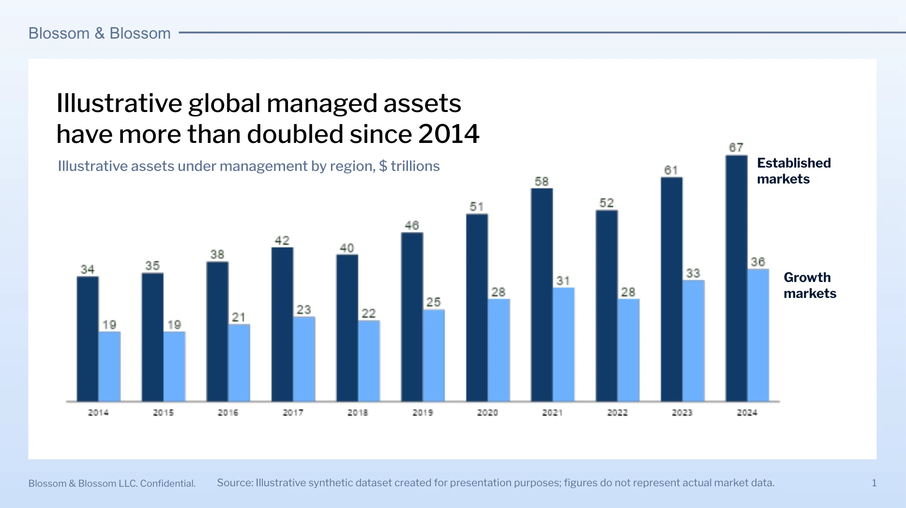
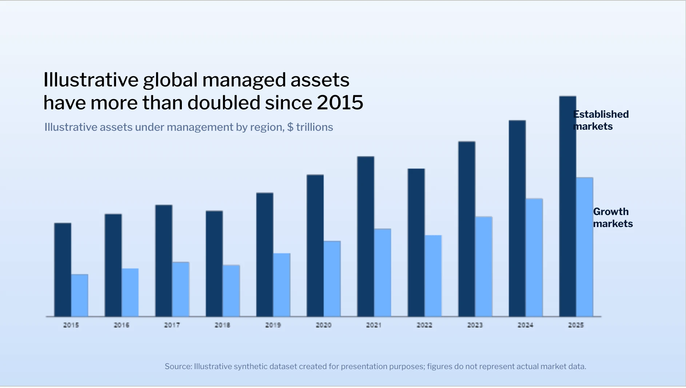
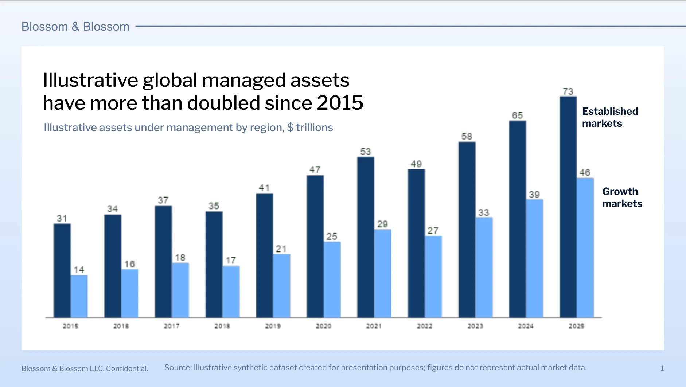

GPT-5.6: Frontier intelligence that scales with your ambition
title: "GPT-5.6: Frontier intelligence that scales with your ambition" source: https://openai.com/index/gpt-5-6/ author: OpenAI date: unknown models: [gpt-5-6] tags: [official] mirrored: 2026-07-15 note: mirrored against link rot by the Pantheon; all rights with the original author
GPT‑5.6: Frontier intelligence that scales with your ambition
More intelligence from every token, stronger performance per dollar, and more capability on demand for your hardest work.
Loading…
We’re launching the GPT‑5.6 family of models for general availability following our limited preview: our new flagship, Sol, alongside Terra, a balanced model for everyday work, and Luna, our most cost-efficient model.
GPT‑5.6 Sol sets a new standard for both intelligence and efficiency, achieving state-of-the-art results across coding, knowledge work, cybersecurity, and science while outperforming previous and competing frontier models with fewer tokens and at lower estimated cost. The result is stronger performance per dollar: more successful work for the same spend, or comparable results at a lower total cost. We also introduce a new way to accelerate the most demanding work: ultra is our highest-capability setting, coordinating multiple agents across parallel workstreams to finish complex tasks faster. Stronger computer use and design judgment make GPT‑5.6 Sol our most polished collaborator yet, helping it inspect, refine, and deliver ready-to-use results.
We trained GPT‑5.6 to get more useful work from every token. On Agents’ Last Exam(opens in a new window), an evaluation of long-running professional workflows across 55 fields, GPT‑5.6 Sol sets a new high of 53.6, eclipsing Claude Fable 5 (adaptive reasoning) by 13.1 points. Even at medium reasoning, it beats Fable 5 by 11.4 points at roughly one-quarter the estimated cost. That efficiency extends to smaller models, which are essential to making intelligence more abundant and affordable: GPT‑5.6 Terra and GPT‑5.6 Luna outperform Fable 5 at around one-sixteenth the cost. On the Artificial Analysis Intelligence Index(opens in a new window), a broad measure of intelligence spanning agentic work, coding, scientific reasoning, and general capabilities, GPT‑5.6 Sol with max reasoning comes within one point of Fable 5 while completing tasks in 61% less time at roughly half the estimated cost.
Agents’ Last Exam(opens in a new window): Long-horizon agentic workflows across professional domains.
GPT‑5.6 launches with our most robust safeguards to date, designed to be resilient against determined and adaptive misuse without broadly limiting legitimate work. Before general availability, we put the models and safeguards through our most extensive evaluation period yet, combining human red teaming with large-scale automated testing. During the preview, we worked closely with expert organizations and with trusted partners to pressure-test defenses and strengthen safeguards before broader launch. The resulting system layers protections trained into the model with real-time checks, monitoring, and access calibrated to trust and risk.
Efficient by default, maximum performance on demand
GPT‑5.6 Sol is our best coding model yet. On the Artificial Analysis Coding Agent Index, GPT‑5.6 Sol with max reasoning sets a new state of the art at 80, 2.8 points above Fable 5, while using less than half the output tokens, taking less than half the time, and costing about one-third less. That advantage extends across the family: Terra performs just above Fable 5, while Luna outperforms Opus 4.8; each does so in roughly one-third of the time, with about half as many output tokens, and at approximately one-quarter the estimated cost. It also sets new state-of-the-art results on Terminal‑Bench 2.1 and DeepSWE, which test complex command-line workflows and long-horizon engineering in real codebases.
*Artificial Analysis Coding Agent Index:** an independent index of coding-agent performance across implementation, terminal use, and real codebases.*
GPT‑5.6 can write and run lightweight programs that coordinate tools, process intermediate results, monitor progress, and choose the next action as work unfolds. This lets tool-heavy tasks advance with fewer tokens, fewer model round trips, and less guidance. Instead of requiring developers to script every step or passing every tool response back through the model, Programmatic Tool Calling(opens in a new window) in the Responses API can filter large amounts of intermediate data, retain only what matters, and adapt its workflow along the way.
For problems that reward a greater investment of time and compute, GPT‑5.6 can push beyond this efficient default. max gives GPT‑5.6 even more time than xhigh to reason and explore alternatives, run checks, and revise its approach. ultra goes further by coordinating four agents in parallel by default, trading higher token use for stronger results and faster time-to-result on demanding tasks. The charts below compare ultra’s default four-agent setup with a one-agent baseline across BrowseComp, SEC-Bench Pro, and Terminal-Bench 2.1; BrowseComp and SEC-Bench Pro also show 16-agent configurations. Across all three evaluations, adding parallel agents shifts the score-latency frontier upward and to the left, reaching stronger results in less time. In the API, developers can build ultra-like experiences using the multi-agent(opens in a new window) beta in the Responses API.
1 of 11
“GPT‑5.6 is one of the strongest models we’ve tested on CursorBench, delivering solid results in early evals. It’s an exciting step forward for developers for persistence, intelligence and overall efficiency. We are looking forward to bringing this model to our Cursor users.”—Oskar Schulz, President at Cursor
“GPT‑5.6 was the strongest model we evaluated on our agentic code-review tests. On our apples-to-apples internal and external PR benchmarks, it beat GPT‑5.5 on F1 while using roughly 3x fewer tokens per PR and delivering about 2x lower median latency.”—Itamar Friedman, Co-Founder & CEO at Qodo
“GPT‑5.6 Sol is really, really good. It’s the most tenacious problem-solver we’ve seen yet, staying focused and on-task for days at a time. It’s exceptional at updating Custom Agents and refining memories as your workspace evolves, so they get sharper the longer they run. Terra and Luna also punch well above their price. Many agents running GPT‑5.5 perform just as well on Terra for half the cost and 16% fewer tokens.”—Simon Last, Co-Founder at Notion
“For production coding agents, GPT‑5.6 stood out as a top-tier model that combines strong coding-agent performance with very strong cost efficiency.”—Scott Wu, Co-founder & CEO at Cognition
“GPT‑5.6 is a major step forward for financial research agents. On Rogo’s Big Finance Benchmark, it improved rubric quality by 6.2 points and answer accuracy by 3.6 points versus GPT‑5.5. With Programmatic Tool Calling, it matched quality while using 24% fewer output tokens and completing tasks 28% faster. That combination of accuracy, speed, and efficiency is exactly what we need to scale high-quality financial analysis.”—Alex Wang, Applied AI at Rogo
“GPT‑5.6 felt less like a chat assistant and more like an end-to-end technical operator. It could inspect live systems, debug issues, make code changes, validate results, publish artifacts, and carry context across long sessions with strong grounding.”—Ian Tracey, Software Engineer, Applied AI at Ramp
“GPT‑5.6 was much better than predecessors at understanding the layer of work I wanted. Across a multi-stage Codex workflow of research, planning, then staged implementation, it followed intent better than GPT‑5.5, and consistently produced accurate line-linked GitHub references where prior models often missed.”—Shane Moran, Senior Applied AI/ML Engineer at Shopify
“GPT‑5.6 consistently stays focused through long-running tasks, makes excellent use of tools, and gets to high-quality solutions with little steering. For research and design work, it produces clear reports and intuitive diagrams that help our teams understand complex systems and move faster.”—Arjun Sambamoorthy, VP, CTO, Cisco AI Software and Platform at Cisco
“Across legal research and document workflows, GPT‑5.6 is already delivering the kind of efficiency gains that change product economics. In our combined evaluation suite, it uses 14% fewer tokens while improving quality across legal research and transactional law use cases. For multi-step document analysis, Programmatic Tool Calling cuts prompt tokens by 38% with no quality loss.”—Angel Faus, VP of Engineering at Clio
“GPT‑5.6 delivered the best efficiency profile we’ve seen for complex financial research. In our evals, it performed at a top-tier level while being 1.72x more token-efficient, leading in three headline categories and scoring 88% on multi-hop tasks. The combination of efficiency, accuracy, and quality makes the model a good fit for scaling financial research workflows.”—Alberto Da Costa, Principal Engineer, Applied AI at Balyasny Asset Management
“GPT‑5.6 Sol showed substantial improvements on reasoning, decision making and autonomy. The improvements to subagent use are particularly valuable for complex accounting work. Excited for the direction of agent development for OpenAI.”—Tarrek Shaban, Head of Product at Basis
- - - - - - - - - - -
A leap forward in design
GPT‑5.6 delivers a step change in design judgment. With only high-level direction, GPT‑5.6 creates tasteful, ergonomic, and functional interfaces. Its stronger computer-use capabilities let it inspect and refine the rendered result—not just generate the underlying code or content—so it can catch visual and functional issues and apply finishing touches before handing the work back.
GPT‑5.6’s frontend capabilities also turn natural-language requests into polished, interactive explanations and visualizations within ChatGPT Work.
End-to-end knowledge work
GPT‑5.6 delivers better results for professional tasks. It takes messy context from your documents and everyday workflows like Slack, Notion, Microsoft 365, and Google Drive, and converts it into expert-level, shareable artifacts.
GPT‑5.6’s strength on knowledge work shows up in evaluations spanning long-horizon professional analysis, browsing, tool use, and computer use. GPT‑5.6 Sol sets new state-of-the-art results on BrowseComp at 92.2% and OSWorld 2.0 at 62.6%; on OSWorld, it surpasses Opus 4.8 while using 85% fewer output tokens. Here, the performance-per-dollar gains extend across the GPT‑5.6 family. Luna nearly matches GPT‑5.5’s peak performance at less than half the estimated cost, while Terra surpasses it at a lower cost.
*BrowseComp**: GPT‑5.6 Sol achieves a new state of the art on BrowseComp, consisting of agentic browsing tasks.*
GPT‑5.6 Sol improves quality in presentations, documents, and spreadsheets, producing outputs that are more polished and accurate. It can create fully editable presentations from scratch, translating a prompt and source material into a coherent visual narrative with strong layouts, hierarchy, and design.
##
The improvement is especially pronounced when following templates and reference decks. GPT‑5.6 can infer a deck’s design system—layouts, typography, spacing, colors, and recurring content patterns, including rules embedded in the Slide Master—and apply those conventions consistently to new material. In this example, when asked to update numbers based on a reference file, the GPT‑5.5 output is missing key components from the master slide, while GPT‑5.6 follows the reference structure more faithfully.
Reference file

GPT‑5.5 output

GPT‑5.6 output

##
GPT‑5.6 also creates more visually refined documents and spreadsheets. It follows complex reference formats more faithfully, which is important for repeatable knowledge work activities. It handles equations and financial models with greater precision, and makes better use of typography, spacing, hierarchy, and page or worksheet layout.
Early customers testing GPT‑5.6 saw improvements to knowledge work outputs across domains.
1 of 9
“GPT‑5.6 is notably efficient on the long, complex workflows behind building production-grade apps. As one of the models now used by Lovable, it delivers for users with roughly 25% fewer steps and 35–48% fewer tool calls than the prior model, while improving project success and reducing stuck runs by 15%. That’s a meaningful difference for anyone trying to go from idea to working app.”—Fabian Hedin, Co-Founder at Lovable
“GPT‑5.6 Sol is the first model we’ve evaluated that consistently generates decks ready for real work. Across 20 challenging client workflows and hundreds of decks in Model ML’s FinBench, it used 39% fewer tokens per deck than Fable while producing more polished, legible decks with clearer, more accurate data visualizations that required less rework before sharing.”—Chaz Englander, Co-Founder & CEO at Model ML
“GPT‑5.6 was the best overall frontend model in our seven-task benchmark. On our five-point frontend QA rubric, it scored 4.4, compared with 4.0 for GPT‑5.5 and 3.5 for Claude 4.8, and consistently turned complex ecommerce, dashboard, and product briefs into complete, responsive interfaces across desktop and mobile.”—AJ Orbach, CEO at Triple Whale
“With GPT‑5.6’s Programmatic Tool Calling, we could build detailed Unity scenes through our structured API much more efficiently. Across scene-construction workflows, it used 63.5% fewer total tokens and 50.1% fewer model turns than the same model using direct tool calls, while producing comparable visual results. That makes iterative game creation much more practical to scale.”—Teddy Cross, Co-Founder & CPO at PlayCo
“GPT‑5.6 is especially strong on presentations. In our early design evals, it was stronger than competitive models for slide creation and about 1.6x more token-efficient, which matters when you’re generating and refining visual work at Canva scale.”—Danny Wu, Head of AI Products at Canva
“GPT‑5.6 marks an advancement for artifact generation in Microsoft 365. In our evaluations, it delivered strong results across a wide range of productivity scenarios, producing outputs that were highly cohesive, accurate, and ready for use. By reducing the effort required to refine prompts and iterate on drafts, it helps users spend less time shaping content and more time acting on it.”—Charles Lamanna, EVP, Copilot, Agents and Platform at Microsoft
“Across 30 real-world app-building conversations, GPT‑5.6 used 22% fewer input tokens and 23% fewer output tokens than GPT‑5.5 while staying competitive on greenfield and long multi-turn work. It’s a genuine step up, especially in design and frontend capabilities.”—Gabriel Grinberg, AI Engineering Lead at Base44
“GPT‑5.6 was a step up on legal workflows. In Legora’s internal eval harness, it improved or held steady in 5 of 7 tasks, with the strongest gains in structured drafting and precedent review, while staying appropriately cautious on legal conclusions.”—Jake Lauritzen, CTO at Legora
“With GPT‑5.6 in Figma Make, teams can turn even complex designs into interactive prototypes. It raises the bar for design-to-code workflows.”—Loredana Crisan, Chief Design Officer at Figma
- - - - - - - - -
Pushing the frontier on cyber and science
GPT‑5.6 is our strongest cybersecurity model yet, achieving frontier performance with significantly fewer tokens. On ExploitBench2, which measures progress from reaching vulnerable code through arbitrary code execution, it scores 73.5% versus GPT‑5.5’s 47.9% at a comparable output-token budget. On ExploitGym3, which asks agents to turn real-world vulnerabilities into working exploits, it almost doubles GPT‑5.5’s peak pass rate, from 15.1% to 24.9% under the two-hour cap; with six hours, it reaches 33.7%. On SEC-Bench Pro, which tests proof-of-concept generation on complex software, it scores 71.2% versus GPT‑5.5’s 45.8% at an improved latency.
GPT‑5.6 supports important defensive tasks such as secure code review, patching, threat modeling, and blue teaming. Qualified individuals and organizations in OpenAI Daybreak’s Trusted Access for Cyber program can access more of its defensive capability through more precise safeguards for verified work in authorized environments, including vulnerability triage and validation, malware analysis, detection engineering, and patch validation.
Individuals can verify their identity and request trusted access(opens in a new window), and organizations can apply for their teams. Individual members will need to enable Advanced Account Security(opens in a new window) with hardware-backed passkeys by September 1 to retain access to our most cyber-capable frontier models; those who do not will return to default access. Users who do not already have hardware-backed passkeys can receive preferred pricing(opens in a new window) from our partner, Yubico. We are also taking additional steps to restrict access to high-risk entities and in high-risk jurisdictions.
*ExploitBench: **Building progressively more capable V8 exploits; GPT‑5.6 shows a large gain over GPT‑5.5. Latency chart is not shown as latency estimation is unreliable for this benchmark.*
GPT‑5.6 Sol also shows broad gains across scientific research. On life sciences evaluations, GPT‑5.6 demonstrates Pareto improvements over GPT‑5.5 on real-world biology, life science research workflows, and chemistry.
GeneBench Pro*: ****Long-horizon genomics and quantitative-biology analyses; GPT‑5.6 reaches stronger results with fewer tokens and less time. Claude Fable 5 is not included as it does not answer(opens in a new window) advanced biology questions and refuses the majority of questions in this eval.*
GPT‑5.6 accelerates OpenAI
GPT‑5.6 is our strongest model yet for accelerating AI research. Inside OpenAI, researchers use it across the development loop: diagnosing failures, optimizing training systems, running experiments, and interpreting results. We already saw that acceleration and stronger adoption during the internal testing period of GPT‑5.6, as average daily output tokens per active researcher were more than twice the highest level observed for GPT‑5.5.
This way of working is quickly becoming standard. Over the past six months, the share of research compute devoted to internal coding inference grew 100-fold, while internal agentic token usage increased approximately 22-fold. These adoption metrics do not measure research progress on their own, but they show how rapidly AI assistance is increasing for research and across other teams like sales, marketing, user ops, finance, and more.
To measure this capability directly, we developed an internal suite of evaluations based on real AI research tasks, including debugging research systems, optimizing kernels and training recipes, running machine-learning experiments, and improving another model.
*Aggregate RSI capability:** On a bundle of evaluations measuring progress towards recursive self-improvement, we observe GPT‑5.6 Sol to be a 16.2 point improvement over GPT‑5.5, accelerating internal research across the board.*
Scaling safety and security with capability
As model capabilities increase, we strengthen our safety stack so advanced intelligence can remain broadly useful while applying greater scrutiny to the highest-risk uses. For GPT‑5.6, we built our most robust safety system to date, calibrated to each model’s capabilities and powered by more compute than ever before.
The GPT‑5.6 models are more capable than our earlier models in both biology and cybersecurity but do not cross the Critical threshold in either category. In cybersecurity, our testing suggests GPT‑5.6 is better at finding and fixing vulnerabilities than at reliably carrying out autonomous, end-to-end attacks against hardened targets—giving defenders an opportunity to strengthen systems before weaknesses are exploited. In biology, our testing suggests GPT‑5.6 can support legitimate research but does not provide the end-to-end capability needed to create, engineer, or synthesize a highly dangerous novel threat.
Both domains are inherently dual-use. In cybersecurity, the same capabilities that could help an attacker exploit a vulnerability can help a defender find it, reproduce it, and build a reliable fix. Overblocking therefore creates a security risk of its own. It can prevent defenders from testing systems and deploying patches while malicious actors continue using other models, including increasingly capable open-source models, as well as established tools. Effective safeguards account for the context and likely consequences of a request, preserving legitimate defensive work while applying stronger controls where the evidence indicates a serious risk of harm.
GPT‑5.6’s safeguards are layered for greater accuracy and redundancy, and designed to adapt quickly as new attacks emerge. Protections trained into the model work alongside real-time checks, continuous monitoring, and account-level enforcement, to help the system remain safe even when a particular layer does not work as intended. In many systems, classifier flags alone decide what to block, relying on lower intelligence models that are harder to change in order to prevent harm. Our approach adds a reasoning monitor that reviews the conversation to determine if there is a potential for harm. This design is intended to enable defensive work while blocking serious misuse, with the most sensitive capabilities reserved for verified users through Trusted Access. Because some protections use test-time reasoning, we can rapidly update them to close gaps without retraining classifiers from scratch.
We are taking a more conservative approach as we continue to strengthen the system against adaptive attacks. Compared with previous models, our GPT‑5.6 Sol cyber safeguards block roughly ten times more potentially harmful activity. Because these measures can create friction for benign use, we provide an option in ChatGPT and Codex to easily retry prompts on lower-capability models, and we will continue reducing the impact of our safeguards on benign use while maintaining a high robustness bar. This reflects our iterative deployment approach: starting conservatively and improving based on what we learn from real-world use.
Before general availability, we ran our most intensive safety evaluations to date, including extensive red teaming, robust capability and safeguard testing with external experts, and approximately NVIDIA A100 Tensor Core GPU-equivalent hours of black-box automated red teaming. This enabled us to systematically probe likely weak points, surface jailbreaks, and help us strengthen the system before launch.
There is no such thing as perfect security, and our work to secure increasingly capable models continues. New weaknesses will be discovered, as will new jailbreaks that circumvent existing safeguards. Each new generation of model will also create new avenues for attack and misuse. We build for that reality through layered safeguards, continuous monitoring, rapid remediation, and collaboration across the defensive community. For GPT‑5.6, we have paired our existing security(opens in a new window) and biology bug bounty programs with a new rapid-remediation process and our strongest monitoring effort to date. Findings from researchers, monitoring, and real-world misuse will feed into new evaluations and stronger safeguards on an ongoing basis.
Read more about our safeguards in the updated GPT‑5.6 system card(opens in a new window).
Availability and pricing
GPT‑5.6 spans three model tiers: Sol, our flagship; Terra, a lower-cost model with performance competitive with GPT‑5.5; and Luna, our fastest and most affordable model. The number identifies the generation, while Sol, Terra, and Luna are durable capability tiers that can advance on their own cadence.
GPT‑5.6 is available starting today across ChatGPT, Codex, and the OpenAI API. The rollout is starting globally now and will continue gradually toward full availability over the next 24 hours.
- Chat: Plus, Pro, Business, and Enterprise users access GPT‑5.6 Sol through medium and higher effort settings. Pro and Enterprise users can also select GPT‑5.6 Sol Pro for the highest-quality results on complex tasks.
- ChatGPT Work and Codex: Free and Go users access GPT‑5.6 Terra. Plus, Pro, Business, and Enterprise users can choose among GPT‑5.6 Sol, Terra, and Luna and set an effort level for each.
maxis available to all users with access to GPT‑5.6 in ChatGPT Work and Codex and can be toggled on in settings. In ChatGPT Work,ultrais available to Pro and Enterprise users. In Codex, it is available to Plus and higher plans. - API: Developers can access Sol, Terra, and Luna through the OpenAI API. In the Responses API, Programmatic Tool Calling lets GPT‑5.6 write and run programs in-memory that coordinate tools and process intermediate results, making it Zero Data Retention (ZDR) compatible. Multi-agent, initially available in beta, lets GPT‑5.6 run concurrent subagents and synthesize their work in a single request.
GPT‑5.6 is priced per 1M tokens across three model sizes: Sol is $5 input / $30 output; Terra is $2.50 input / $15 output; and Luna is $1 input / $6 output. GPT‑5.6 also introduces more predictable prompt caching, including support for explicit cache breakpoints(opens in a new window) and a 30-minute minimum cache life. For GPT‑5.6 and later models, cache writes are billed at 1.25x the model’s uncached input rate, while cache reads continue to receive the 90% cached-input discount.
##
Professional
EvalGPT‑5.6 SolGPT‑5.6 TerraGPT‑5.6 LunaGPT‑5.5Claude Fable 5Claude Opus 4.8Gemini 3.1 Pro PreviewGemini 3.5 Flash
Agents' Last Exam52.7%50.4%50.3%46.9%40.5%45.2%32.1%—
GDPval-AA v21,747.8 Elo1,593 Elo1,591.8 Elo1,493.7 Elo1,759.6 Elo1,600.1 Elo962.3 Elo1,348.8 Elo
Management Consulting Tasks (Internal)43.2%37.2%35.4%31.3%35.5%31.6%13.2%—
Big Finance Bench53%51%36%49%—44%——
Artificial Analysis Intelligence Index v4.158.9 Index score55 Index score51.2 Index score54.8 Index score59.9 Index score55.7 Index score46.5 Index score50.2 Index score
Coding
EvalGPT‑5.6 SolGPT‑5.6 Sol UltraGPT‑5.6 TerraGPT‑5.6 LunaGPT‑5.5Claude Mythos 5Claude Mythos PreviewClaude Fable 5Claude Opus 4.8Gemini 3.1 Pro Preview
Artificial Analysis Coding Agent Index v1.180 Index score—77.4 Index score74.6 Index score76.4 Index score——77.2 Index score72.5 Index score42.7 Index score
SWE-Bench Pro64.6%—63.4%62.7%59.4%80.3%77.8%80%69.2%54.2%
DeepSWE v1.172.7%—69.6%67.2%67%——69.7%59%11.8%
Terminal-Bench 2.188.8%91.9%87.4%84.7%85.6%88%—83.1%78.9%70.7%
Science and health
EvalGPT‑5.6 SolGPT‑5.6 TerraGPT‑5.6 LunaGPT‑5.5Claude Fable 5Claude Opus 4.8Gemini 3.1 Pro PreviewGemini 3.5 Flash
GeneBench Pro28.7%23.3%10.8%12%—16%3.1%8.14%
LifeSciBench59.9%56%51.2%50.4%—53.6%——
MedChemBench (Internal)48.3%35%30.4%35.5%————
HealthBench Professional⁶60.5%57.7%55.7%49.5%60.9%53%——
Computer use
EvalGPT‑5.6 SolGPT‑5.6 Sol UltraGPT‑5.6 TerraGPT‑5.6 LunaGPT‑5.5Claude Mythos 5Claude Mythos PreviewClaude Opus 4.8Gemini 3.1 Pro Preview
OSWorld 2.062.6%—50.2%45.6%47.5%——54.8%—
BrowseComp90.4%92.2%87.5%83.3%84.4%88%87.9%84.3%85.9%
BenchCAD70.6%—62.3%63.1%44.4%38.4%35.5%27.3%—
BenchCAD (python tool)83.4%—78.2%73.9%55.8%65%61%51.8%—
Cybersecurity
EvalGPT‑5.6 SolGPT‑5.6 Sol UltraGPT‑5.6 TerraGPT‑5.6 LunaGPT‑5.5Claude Mythos 5Claude Mythos PreviewClaude Opus 4.8
Capture-the-Flag Challenges96.7%—91.8%85.2%88.1%———
SEC-Bench Pro71.2%74.3%57.7%48.9%45.8%———
ExploitBench73.5%—52.9%33.2%47.9%78%74.2%40%
ExploitGym33.7%—23.2%12.4%15.1%———
Self-improvement
EvalGPT‑5.6 SolGPT‑5.6 TerraGPT‑5.6 LunaGPT‑5.5
Internal Research Debugging Evaluation68.3%67.8%50.8%50%
KernelGen 1P61.1%49.2%22.4%29.3%
NanoGPT9.69%14.5%1.66%2.65%
PostTrainBench Lite50.3%51.5%29.6%38.8%
RSI Index57.9%56.3%41.9%41.7%
Multimodal
EvalGPT‑5.6 SolGPT‑5.6 TerraGPT‑5.6 LunaGPT‑5.5Claude Fable 5Claude Opus 4.8Gemini 3.1 Pro Preview
MMMU Pro (no tools)83%80.7%78.4%81.2%——80.5%
MMMU Pro (with tools)84.6%82%79.5%83.2%———
gdp.pdf30.7%24.7%22.7%26%29.8%22.5%16.7%
Academic
EvalGPT‑5.6 SolGPT‑5.6 TerraGPT‑5.6 LunaGPT‑5.5Claude Mythos 5Claude Mythos PreviewClaude Fable 5Claude Opus 4.8Gemini 3.1 Pro Preview
GPQA Diamond94.6%92.9%92.3%93.6%94.1%94.6%92.6%92%94.3%
FrontierMath Tier 1-3 (v2)89%84.9%78.6%85.3%——87%80%59.6%
FrontierMath Tier 4 (v2)83%68.3%58.5%72.5%——87.8%56.1%—
Tool use
EvalGPT‑5.6 SolGPT‑5.6 TerraGPT‑5.6 LunaGPT‑5.5Claude Mythos 5Claude Mythos PreviewClaude Fable 5Claude Opus 4.8Gemini 3.1 Pro PreviewGemini 3.5 Flash
AutomationBench18.1%15.2%14.9%12.9%——17.4%15.5%—14.5%
Toolathlon58%53.1%53.4%55.6%61.7%61.1%61.7%59.9%48.8%—
Long context
EvalGPT‑5.6 SolGPT‑5.6 TerraGPT‑5.6 LunaGPT‑5.5Claude Mythos 5Claude Mythos PreviewClaude Opus 4.8
OpenAI MRCR v2 8-needle 256K-512K91.5%89.6%41.3%81.5%———
OpenAI MRCR v2 8-needle 512K-1M73.8%72.5%41.3%74%———
GraphWalks BFS 256k f190.7%76.9%81.3%73.7%91.1%85.7%85.9%
GraphWalks BFS 1mil f177.1%71.2%51.2%45.4%79.4%74.3%68.1%
Abstract reasoning
EvalGPT‑5.6 SolGPT‑5.6 TerraGPT‑5.6 LunaGPT‑5.5Claude Opus 4.8Gemini 3.1 Pro Preview
ARC-AGI-3⁷7.78%0.8%0.18%0.43%1.5%0.42%
Author
OpenAI
Footnotes
- Cyber capabilities are evaluated with reduced safeguards. Users can join OpenAI Daybreak’s Trusted Access for Cyber program for increased access to defensive cyber capabilities.
- All models are evaluated using the ExploitBench API harness with 5 seeds and reasoning continuity.
- We ran ExploitGym on our alpha API, which outputs responses faster than our public API, and then rescaled to match our public API. When rescaling latencies to the speeds expected for our public API, this causes some estimated latencies to exceed the two- and six-hour time limits, despite being correctly obeyed in the evaluation run. To get faster speeds for time-sensitive work, we offer priority processing in the API and fast mode in Codex.
- We estimate latency and API cost by looking at the production behavior of our models, and simulating offline. These estimates account for tool call details, sampled tokens, and input tokens. Real-world results may vary substantially, and depend on many factors not captured in our simulation. We simulate latency at fast API speeds, and cost at regular API pricing.
- Models without reported output tokens, latency or cost are plotted as horizontal dotted lines.
- For multi-agent, latency is derived from the root agent, while output token and API-cost totals include all tokens. Ultra is run with 4 agents.
- We compute scores with the official scoring approach described in the HealthBench Professional paper, which is not comparable to results reported in Anthropic system cards.
- ARC-AGI-3 for Opus 4.8 was run on high and not max reasoning effort, as this is the only published ARC-AGI-3 result.
Keep reading
[
GPT-5.6 is now the preferred model in Microsoft 365 Copilot
ProductJul 9, 2026](/index/gpt-5-6-preferred-model-microsoft-365-copilot/)
[
ChatGPT is now a partner for your most ambitious work
ProductJul 9, 2026](/index/chatgpt-for-your-most-ambitious-work/)
[
Introducing GPT-Live
ProductJul 8, 2026](/index/introducing-gpt-live/)